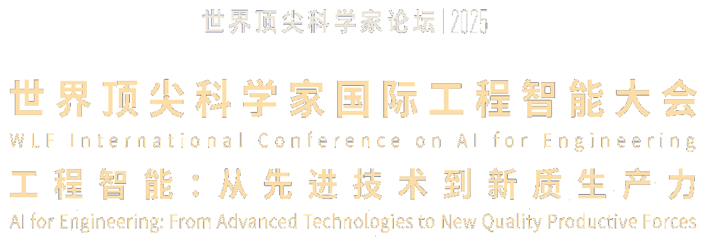

2026
投稿开始
征稿启动
WORKSHOP CALL FOR PAPERS
2026 国际工程智能大会
面向工程智能研究与应用，征集 Workshop 论文， 入选论文将以 Poster 形式进行现场展示与交流。
IMPORTANT DATES
从投稿到现场交流
2026
征稿启动
2026
提交论文及展示用 Poster
2026
通知入选论文
2026
统一打印、现场评选、颁发证书
投稿开始时间：2026年9月12日；投稿截止时间：2026年10月10日23:59（北京时间，UTC+8）。
01 / Workshop call for papers
征集工程智能相关论文，入选论文以 Poster 形式展示。
诚邀高校、科研机构及产业界的研究人员与团队投稿，围绕人工智能与工程领域的融合，分享研究方法、技术进展与应用实践。
征集方向包括以下五个方面：
10月29日，大会组织者统一打印入选论文的 Poster 并现场展示。
02 / Selection & awards
线上确定入选作品，现场评选论文奖项。
10.10 → 10.15
10月10日线上投稿截止，10月15日通知入选论文。所有入选论文将于10月29日以 Poster 形式展示，并获得入选证书。
10.29 / ON SITE
10月29日，大会组织者统一打印所有入选论文的 Poster 并展示。现场嘉宾及评委评选出获奖论文，并在当天颁奖。
最佳论文奖
最佳论文提名奖
所有入选论文均可获得
03 / Conference program
以下为拟定安排，具体场地、嘉宾及报告题目将陆续公布。
介绍 Workshop 论文征集情况与 Poster 展示安排
主办方统一打印展示；现场嘉宾及评委开展评选
公布获奖名单，颁发奖项与入选证书
活动总结
Poster 展示会安排在10月29日下午，即主论坛前一天。现场展示、评选及颁奖在同一天完成。
主持及致辞嘉宾待定
年度报告与技术发布
演讲嘉宾及报告题目待定
演讲嘉宾及报告题目待定
主持人、嘉宾及议题待定
ABOUT THE CONFERENCE
国际工程智能大会汇聚学术界与产业界，交流人工智能在工程领域的研究进展与实践经验，推动跨学科合作。
2025年大会于上海临港举行，围绕“工程智能：从先进技术到新质生产力”展开交流，并发布《工程智能白皮书》。
阅读同济大学2025大会报道
ORGANIZATION
大会联合主办
大会承办 / Workshop 主办